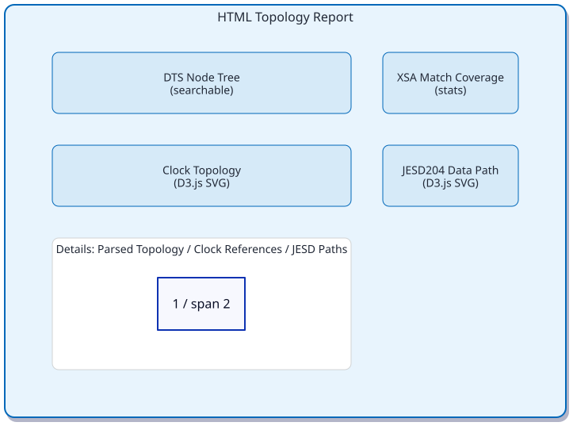
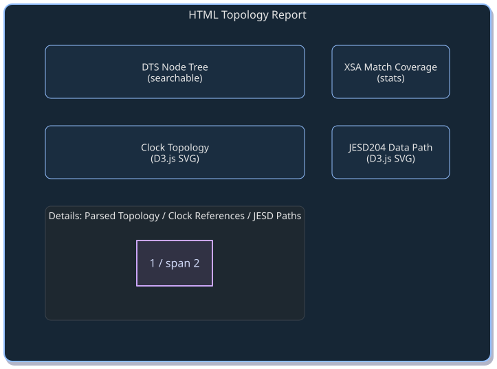
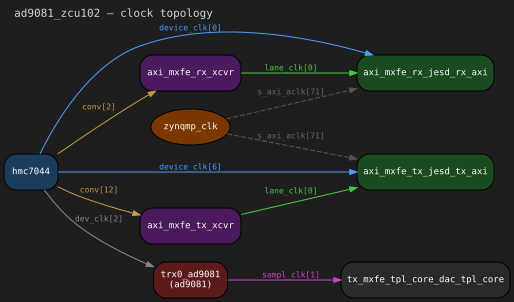
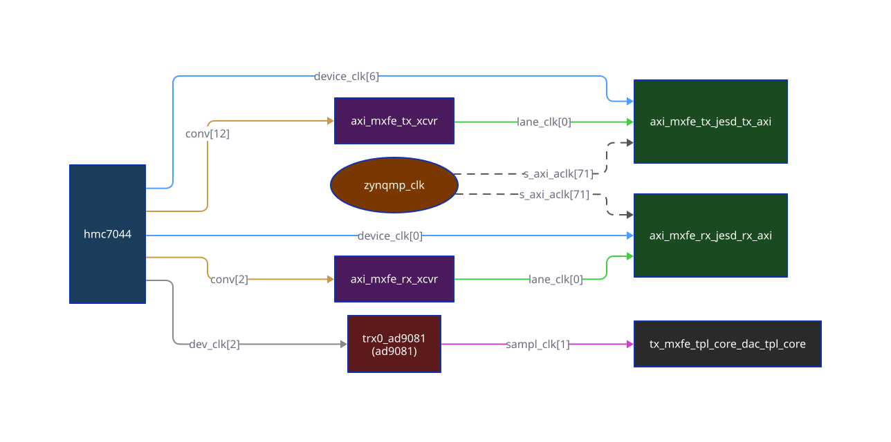
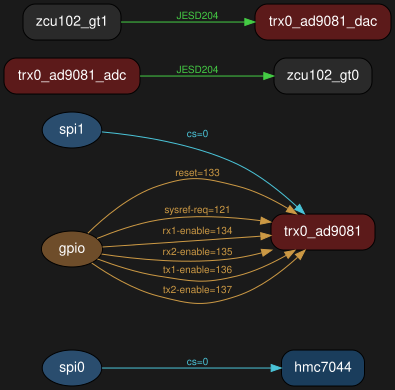
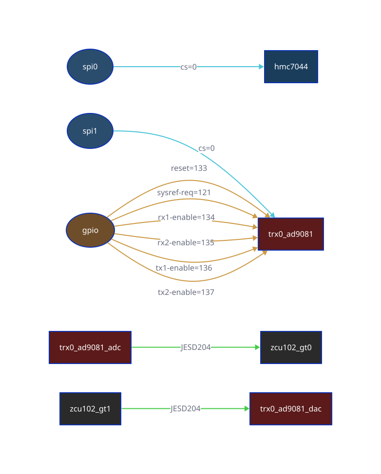
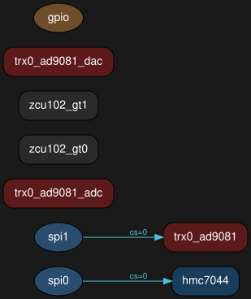
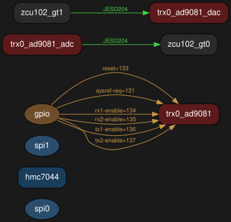
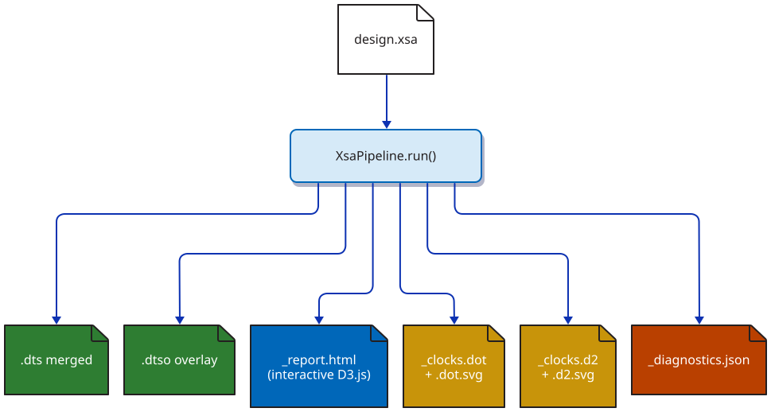
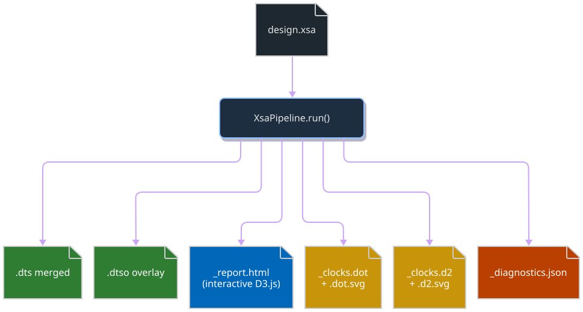

Visualization and Diagnostics
The XSA pipeline can generate interactive reports, clock-tree diagrams, and structural lint diagnostics alongside the device tree output.
HTML topology report
The HTML report is a self-contained interactive page (no CDN or external dependencies) built with D3.js. It contains six panels:
DTS Node Tree — searchable list of all device tree nodes from the merged DTS, with highlighting for ADI-specific nodes (JESD, AD9081, HMC7044, etc.)
XSA Match Coverage — percentage of XSA topology IPs that appear in the merged DTS, with matched vs unmatched counts per category
Details — expandable tables for parsed topology (JESD RX/TX, converters, clockgens), clock references, and JESD data paths
Clock Topology — D3.js diagram of clock generators and their output nets, color-coded by component type
JESD204 Data Path — D3.js diagram showing JESD RX/TX cores, converters, and data flow connections with lane count annotations
Control-Plane Wiring — D3.js force-directed diagram of SPI / JESD / GPIO / IRQ / I2C edges with five kind-toggle checkboxes for per-kind visibility. Same data the standalone DOT/D2 wiring graph uses (see Control-plane wiring graphs).
Example report layout
{kind=link}

{kind=link}

Generating from Python
from adidt.xsa.pipeline import XsaPipeline
result = XsaPipeline().run(
xsa_path=Path("design.xsa"),
cfg=cfg,
output_dir=Path("out/"),
emit_report=True,
)
print(f"Report: {result['report']}")
# out/<name>_report.html
Generating from CLI
The adidtc xsa2dt command generates the report by default:
adidtc xsa2dt -x design.xsa --profile ad9081_zcu102 -o out/
# Opens out/ad9081_zcu102_report.html
Clock-tree diagrams
The clock graph generator parses clocks, clock-names, and
clock-output-names properties from the merged DTS and produces
directed graphs showing the full clock distribution tree.
Two output formats are always written:
Graphviz DOT (
.dot) — rendered to SVG automatically ifdotis on PATHD2 (
.d2) — rendered to SVG automatically ifd2is on PATH
Example: FMCDAQ2 clock tree
The following diagram shows the clock distribution for an FMCDAQ2 design (AD9523-1 clock + AD9680 ADC + AD9144 DAC):
flowchart LR
subgraph PS["Processing System"]
zynqmp_clk["zynqmp_clk\n(PS clock)"]
end
subgraph CLK["Clock Chip"]
clk0_ad9523["clk0_ad9523\n(AD9523-1)"]
end
subgraph JESD["JESD204 Links"]
jesd_rx["axi_ad9680_jesd204_rx"]
jesd_tx["axi_ad9144_jesd204_tx"]
end
subgraph XCVR["GT Transceivers"]
xcvr_rx["axi_ad9680_adxcvr"]
xcvr_tx["axi_ad9144_adxcvr"]
end
subgraph CONV["Converters"]
adc["adc0_ad9680\n(AD9680 ADC)"]
dac["dac0_ad9144\n(AD9144 DAC)"]
end
zynqmp_clk -->|s_axi_aclk| jesd_rx
zynqmp_clk -->|s_axi_aclk| jesd_tx
clk0_ad9523 -->|adc_clk| adc
clk0_ad9523 -->|adc_sysref| adc
clk0_ad9523 -->|dac_clk| dac
clk0_ad9523 -->|conv| xcvr_rx
clk0_ad9523 -->|conv| xcvr_tx
xcvr_rx -->|device_clk| jesd_rx
xcvr_rx -->|lane_clk| jesd_rx
xcvr_tx -->|device_clk| jesd_tx
xcvr_tx -->|lane_clk| jesd_tx
style PS fill:#7a3800,color:#fff
style CLK fill:#1a3d5c,color:#fff
style JESD fill:#1a4a20,color:#fff
style XCVR fill:#4a1a5c,color:#fff
style CONV fill:#5c1a1a,color:#fff
Generated example: AD9081 + ZCU102
The following SVG is the literal Graphviz output produced by
ClockGraphGenerator for the examples/ad9081_fmc_zcu102.py
design — no manual layout, no abstract schematic. Source DOT and D2
files are checked in next to the SVG under doc/source/_static/viz/.
{kind=link}

D2 rendering (ELK orthogonal layout) of the same data:
{kind=link}

Node color coding
Category |
Color |
Examples |
|---|---|---|
PS clock |
Brown |
|
Clock chip |
Blue |
|
Transceiver (XCVR) |
Purple |
|
JESD204 |
Green |
|
Converter core |
Red |
|
DMA |
Gray |
|
Edge color coding
Clock Name |
Style |
Meaning |
|---|---|---|
|
Blue solid |
Device clock from XCVR to JESD controller |
|
Green solid |
Lane clock from XCVR to JESD controller |
|
Orange solid |
Reference clock from clock chip to XCVR |
|
Purple solid |
Sampling clock from PHY to TPL core |
|
Gray dashed |
AXI register access clock (PS → peripherals) |
Example DOT output
digraph clock_topology {
label="fmcdaq2 — clock topology";
rankdir=LR;
node [style="filled,rounded" fontname="monospace"];
zynqmp_clk [label="zynqmp_clk" fillcolor="#7a3800"];
clk0_ad9523 [label="clk0_ad9523\n(ad9523-1)" fillcolor="#1a3d5c"];
axi_ad9680_adxcvr [label="axi_ad9680_adxcvr" fillcolor="#4a1a5c"];
axi_ad9680_jesd204_rx [label="axi_ad9680_jesd204_rx" fillcolor="#1a4a20"];
adc0_ad9680 [label="adc0_ad9680\n(ad9680)" fillcolor="#5c1a1a"];
clk0_ad9523 -> adc0_ad9680 [label="adc_clk"];
clk0_ad9523 -> axi_ad9680_adxcvr [label="conv"];
axi_ad9680_adxcvr -> axi_ad9680_jesd204_rx [label="device_clk"];
zynqmp_clk -> axi_ad9680_jesd204_rx [label="s_axi_aclk" style=dashed];
}
Generating from Python
result = XsaPipeline().run(
xsa_path=Path("design.xsa"),
cfg=cfg,
output_dir=Path("out/"),
emit_clock_graphs=True,
)
print(f"DOT: {result['clock_dot']}")
print(f"D2: {result['clock_d2']}")
# SVG files present if rendering tools are on PATH:
if "clock_dot_svg" in result:
print(f"SVG: {result['clock_dot_svg']}")
Installing rendering tools
DOT and D2 are optional — the .dot and .d2 text files are
always written. Install the tools to get SVG output:
# Graphviz (DOT → SVG)
sudo apt install graphviz
# D2 (D2 → SVG)
curl -fsSL https://d2lang.com/install.sh | sh -s --
Control-plane wiring graphs
In addition to the clock tree, the pipeline emits a wiring graph
showing the control-plane connections of the design — which devices
sit on which SPI bus and chip-select, how JESD204 cores connect to
their transceivers and converters, where each JESD core’s IRQ goes,
and (best-effort) which I2C devices are routed by the merged DTS.
GPIO control lines (reset, sysref-req, rx{1,2}-enable,
tx{1,2}-enable) are extracted from device-class fields when
generated via the System API and from *-gpios = <&gpio N flag>;
properties when generated from the merged DTS.
Like the clock-tree generator, two output formats are always written:
Graphviz DOT (
{name}_wiring.dot) — rendered to SVG whendotis on PATH.D2 (
{name}_wiring.d2) — rendered to SVG whend2is on PATH.
Edges are color-coded by kind:
Kind |
Color |
Source |
|---|---|---|
SPI |
cyan ( |
SPI master → secondary, label = |
JESD |
green ( |
Converter ↔ JESD core, label = |
GPIO |
orange ( |
GPIO controller → device, label = |
IRQ |
red dashed ( |
JESD core → |
I2C |
purple ( |
I2C master → child, best-effort regex parse of merged DTS. |
Generated example: AD9081 + ZCU102
The following SVGs are the literal generator outputs produced by
WiringGraphGenerator for the examples/ad9081_fmc_zcu102.py
design. Cyan edges are SPI buses, green are JESD links, orange are
GPIO control lines, dashed red would be JESD-core IRQs, and purple
would be I2C children. This particular design has no I2C devices on
the AD9081-FMC card, so no purple edges appear. Source DOT and D2
files are checked in next to the SVGs under
doc/source/_static/viz/.
Graphviz DOT rendering (left-to-right hierarchical layout):
{kind=link}

D2 rendering (ELK orthogonal layout) for the same graph:
{kind=link}

Filtered views via kinds=
WiringGraphGenerator.generate(graph, output_dir, name, kinds=...)
filters the rendered edges to a subset of kinds without re-deriving
the graph. Useful when the full graph is too dense to read in a PR
diff and you only want to discuss one wiring kind at a time.
SPI bus only (kinds={"spi"}):
{kind=link}

JESD links + GPIO control (kinds={"jesd", "gpio"}):
{kind=link}

The same data drives the Control-Plane Wiring panel in the HTML report (see “HTML topology report” above), which renders the graph as an interactive D3 force-layout with five kind-toggle checkboxes.
From the System API
from pathlib import Path
import adidt
fmc = adidt.eval.ad9081_fmc()
fmc.converter.set_jesd204_mode(1, "jesd204c")
fpga = adidt.fpga.zcu102()
system = adidt.System(name="ad9081_zcu102", components=[fmc, fpga])
system.connect_spi(bus_index=0, primary=fpga.spi[0], secondary=fmc.clock.spi, cs=0)
system.connect_spi(bus_index=1, primary=fpga.spi[1], secondary=fmc.converter.spi, cs=0)
system.add_link(
source=fmc.converter.adc, sink=fpga.gt[0],
sink_reference_clock=fmc.dev_refclk,
sink_core_clock=fmc.core_clk_rx,
sink_sysref=fmc.dev_sysref,
)
result = system.generate_wiring_graph(Path("out"))
print(result["wiring_dot"]) # always present
if "wiring_dot_svg" in result:
print(result["wiring_dot_svg"])
From the XSA pipeline
The pipeline emits the wiring artifacts alongside the clock-graph
artifacts when emit_wiring_graph=True (the default):
from adidt.xsa.pipeline import XsaPipeline
result = XsaPipeline().run(
xsa_path="design.xsa",
cfg=cfg,
output_dir="out",
emit_wiring_graph=True, # default
)
print(result["wiring_dot"])
print(result["wiring_d2"])
Limitations
I2C edges in v1 come from a regex pass over the merged DTS; there is no structured
System.connect_i2c()API yet. XSA-path designs that route I2C masters in the HWH netlist but do not declare child devices in the DTS will not show I2C edges.IRQ edges come only from the XSA topology (
Jesd204Instance.irq); the System path does not currently model IRQs and will not emit IRQ edges.DMA-channel IRQs live as cell-strings inside
JesdLinkModeland are not rendered as separate edges in v1.
DTS structural linter
The built-in linter checks the generated DTS for structural issues before flashing to hardware.
Checks include:
Unresolved phandle references (
<&missing_label>)SPI chip-select conflicts (two devices at the same CS on one bus)
Clock cell count mismatches (
#clock-cellsvs clock phandle args)Missing
compatiblestringsDuplicate node labels
Example lint output
{
"diagnostics": [
{
"severity": "error",
"rule": "unresolved-phandle",
"node": "&axi_adrv9009_core_rx_obs",
"message": "Label 'axi_adrv9009_core_rx_obs' not found in base DTS"
},
{
"severity": "warning",
"rule": "spi-cs-conflict",
"node": "&spi0",
"message": "Duplicate chip-select 0 on spi0 bus"
}
],
"summary": {
"errors": 1,
"warnings": 1,
"info": 0,
"total": 2
}
}
Generating from Python
result = XsaPipeline().run(
xsa_path=Path("design.xsa"),
cfg=cfg,
output_dir=Path("out/"),
lint=True,
strict_lint=True, # Raises DtsLintError on errors
)
print(f"Diagnostics: {result['diagnostics']}")
# out/<name>_diagnostics.json
Generating from CLI
# Run with lint warnings
adidtc xsa2dt -x design.xsa --profile adrv9009_zcu102 --lint -o out/
# Fail on lint errors
adidtc xsa2dt -x design.xsa --profile adrv9009_zcu102 --strict-lint -o out/
Combining all outputs
Enable everything at once:
result = XsaPipeline().run(
xsa_path=Path("design.xsa"),
cfg=cfg,
output_dir=Path("out/"),
emit_report=True,
emit_clock_graphs=True,
lint=True,
)
This produces:
{kind=link}

{kind=link}
